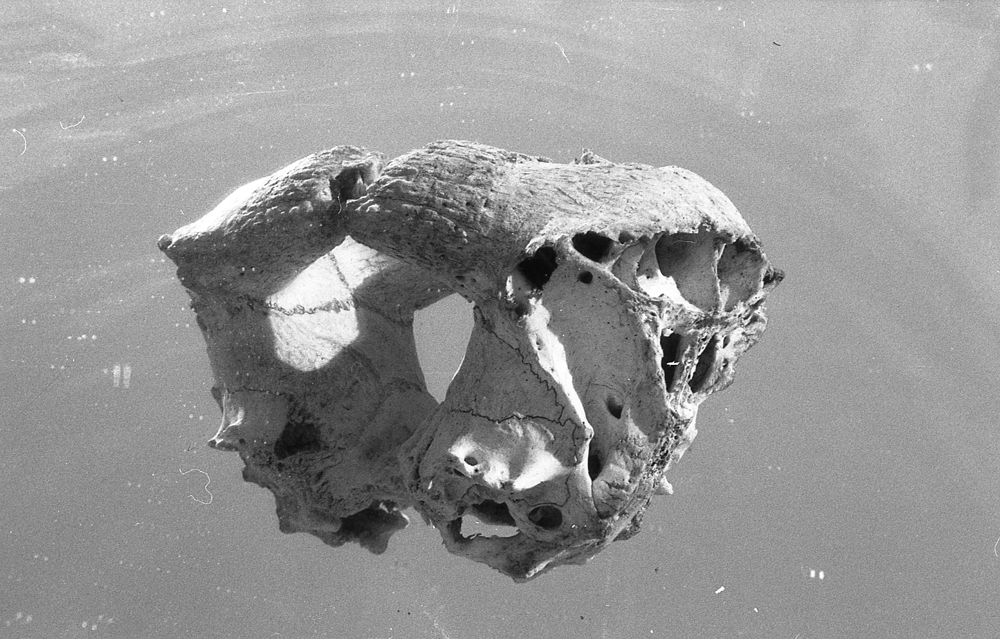
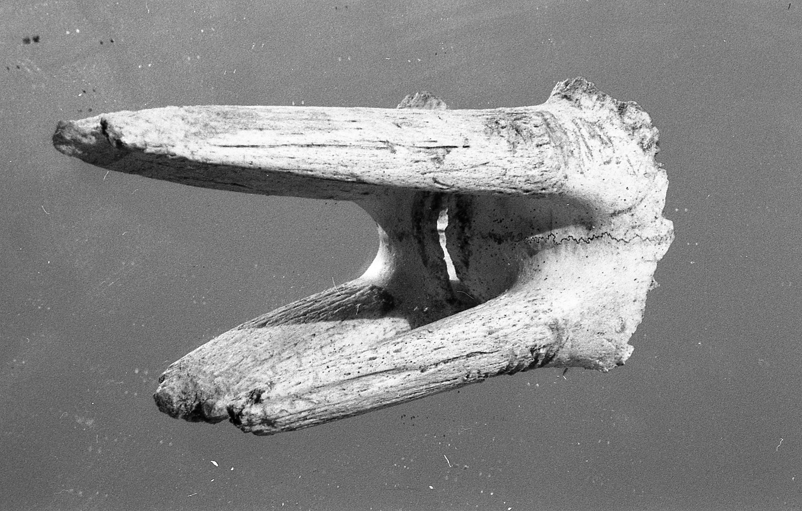

Memorabilia is an ongoing body of work built entirely from objects belonging to my personal collection gathered through walking, travelling and everyday encounters. These objects have revealed or shaped my obsessions and fascinations over time. Many of them are strange or unusual objects that may only be meaningful or interesting to me. Some are even repellent or unsettling, yet they fascinate me because they seem to speak of something beyond themselves. Within Memorabilia, I remove these objects from their original context and from their function, allowing them to become something else through the photographic process. I work with deliberately rudimentary and direct techniques. I place the objects in a mirror, creating a relationship between the object, its reflection and its photographic image, producing a moment of ambiguity.